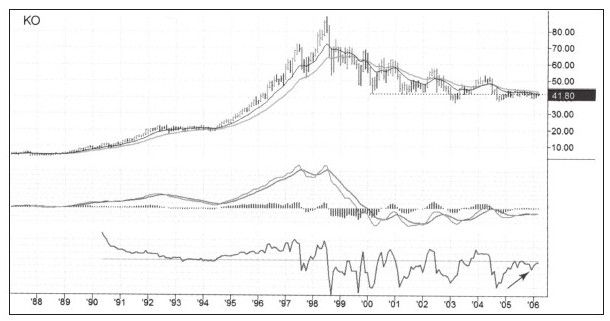
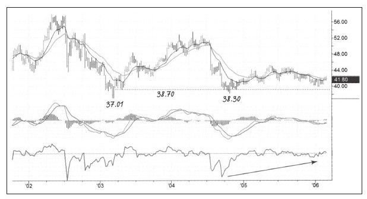
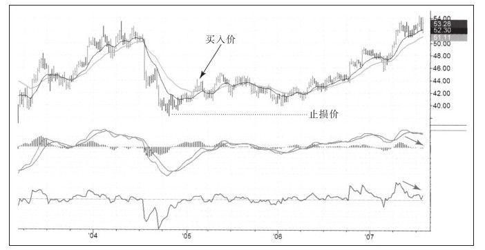

交易周期影响止损大小，较短时间框架内的交易止损必须小，而长周期框架的交易要求止损大一些。
在任何一个时间框架下交易都有利弊。长周期交易框架的好处是你有更多的时间去思考和做决策；另一个极端是如果不去思考而开展日内交易，那你就死定了。长周期交易虽然可以有很多时间去准备，但是止损往往很大。股票3个月变化幅度要远远大于3个小时的变化幅度，交易者面对的是动态的市场，经历的时间越长价格的变化就越大。
新手最好远离日内交易，快速变化的价格会毁了业余交易者。我也不建议新手参与长期交易，学习交易的最好方式是刚开始做一些小头寸的交易，做好交易记录，练习入场和出场。长线交易不能提供足够的交易次数以获得经验。
波段交易是学习交易的好方法，如果按照你的方法做一年交易，资金曲线开始上升并且回撤较小，你就知道你正在变得更好。这时你可以决定是否继续做波段交易或者扩展交易时间框架。如果这时想学习长期交易，就需要使用更宽的止损。宽幅止损可以避免市场无序运动，逻辑上讲长线止损的位置只有一个，那就是改变你对市场根本看法的那个价格。如果看多价格的长期走势并交易，止损价格应该就是你认为趋势已经反转时的价格水平。
如果发现上涨趋势并做多，止损宽度应该大于市场正常回调幅度，一波大的上涨趋势要比一次小的市场回调幅度大，所以止损应该更宽一些。
三重过滤网系统的原则是在大的时间框架内做出战略上的决策（如图5-13所示），在较小的时间框架内做出战术上的选择（如图5-14所示）。月线图显示可以买入然后再看周线图并选择在哪里买入。


假如账户中有10万美元并使用2%的资金管理规则，如果每股最大损失为图5-14中所说的3美元，那么最大可以交易近600股。
长期交易的止损必须大一些，但不能大到没法交易的地步。职业交易者经常会在长期交易中穿插一些短期交易。
现在，我们看看KO后来发生了什么（如图5-15所示）。

宽幅止损在这次交易中起了重要作用。还有一点需要谨记，那就是止损值越宽可购入的股票数量就越少，要确保资金管理中的铁三角规则每条都能用到。